This section describes the metrics available in Open Meta-Analyst.
You can choose a metric for binary or continuous data by selecting metric from the analysis menu, as described in Example - Performing a Meta-Analysis.
The formulas for binary metrics are labeled according to the 2 X 2 table data below:
| Events | Non-events | |
| Treated | a | b |
| Control | c | d |
| Metric | Effect size | Variance |
| OR - Odds ratio | 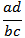 | |
| RD - Risk difference | 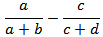 | 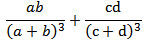 |
| RR - Relative risk | 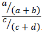 | 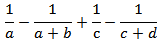 |
| AS - Arcsine-transformed risk difference | 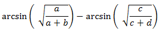 | 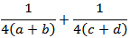 |
| YUQ - Yule's Q | ||
| YUY - Yule's Y |
In the equations below, n = a + b.
| Metric | Effect size | Variance |
| PR - Proportion | 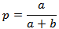 | 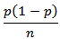 |
| PLN - Log proportion | 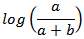 | 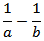 |
| PLO - Logit proportion |  |
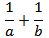 |
| PAS - Arcsine-transformed proportion | 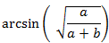 | 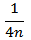 |
| PFT - Freeman-Tukey double arcsine-transformed proportion |  |
 | Random-Effects Methods | Forest Plot Options |  |